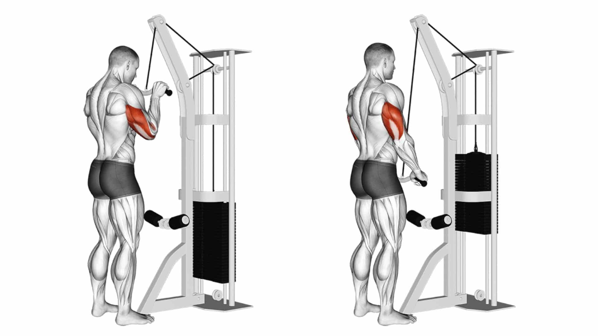
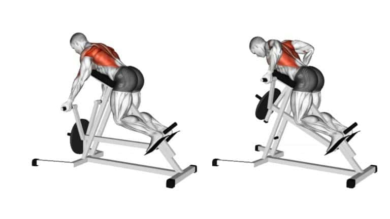
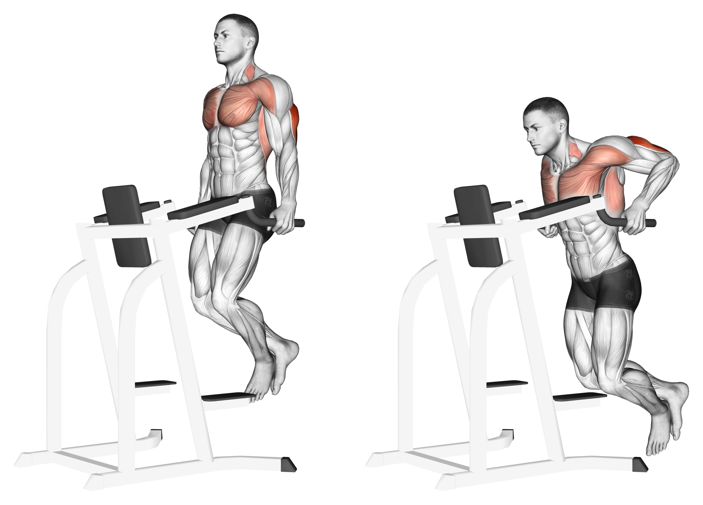
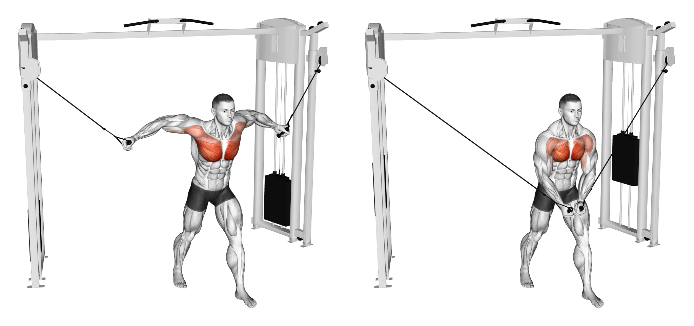
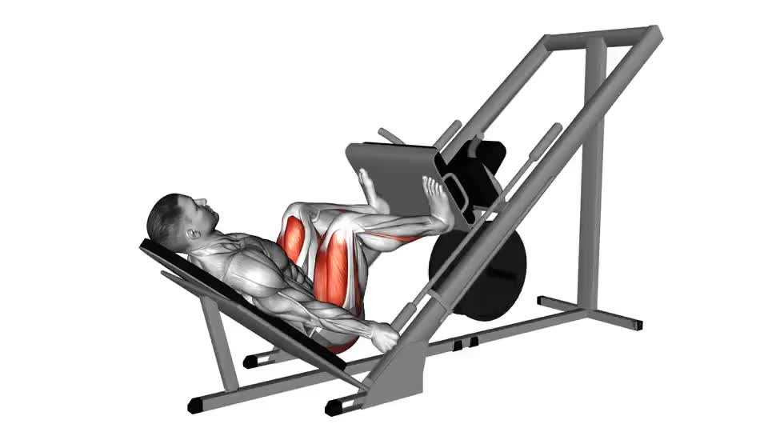
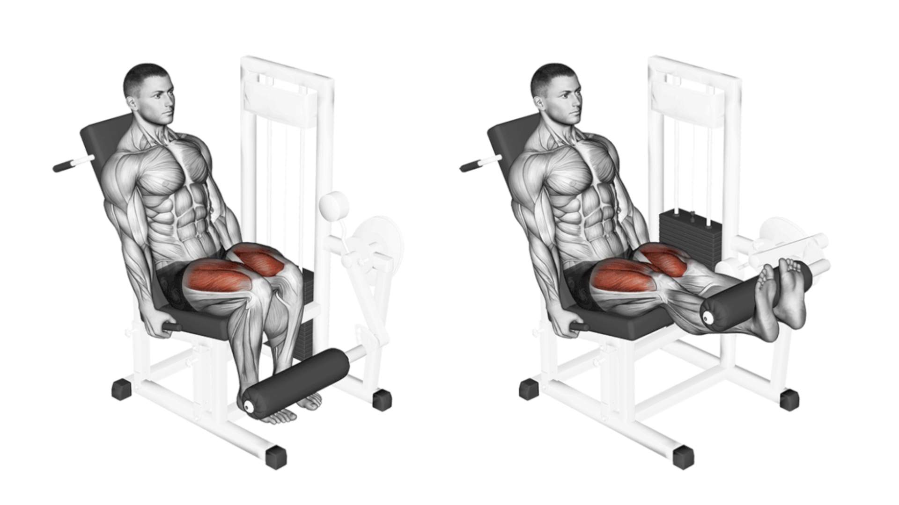

Equipment List
-
Preacher Curl Machine — Isolates the biceps, especially the brachialis and brachioradialis. Builds arm size and bicep peak with strict form. Watch

-
Tricep Pushdown — Hits all heads of the triceps, improves pressing power and arm shape. Watch
 -
Lat Pulldown — Develops wide, strong lats and helps posture. Watch

-
Shoulder Lateral Raise — Targets the lateral delts to widen and define shoulders. Watch

-
Seated Cable Row — Strengthens the lats, traps, and rhomboids while improving posture and back definition. Watch

-
Seated Chest Row (T-Bar) — Builds a thick back, hitting lats, rhomboids, and rear delts. Enhances pulling strength. Watch
 -
Assisted Dip Machine — Strengthens triceps, chest, and front shoulders. Perfect for progressing toward bodyweight dips. Watch
 -
Cable Fly Machine — Isolates the chest using constant tension to activate inner and outer pecs. Watch
 -
Pec Deck Machine — Chest fly machine that isolates the pectorals with guided form. Watch

-
Leg Press Machine — Works quads, hamstrings, glutes, and calves with less strain on the back. Watch
 -
Leg Extension Machine — Isolates the quadriceps, strengthening the front of the thigh. Watch
 -
Hamstring Curl Machine — Targets the hamstrings and glutes through controlled knee flexion. Watch